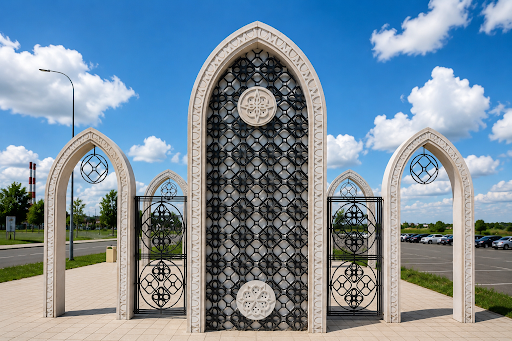
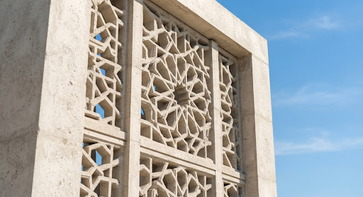
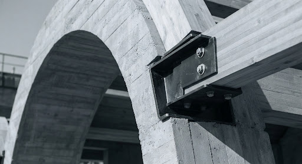
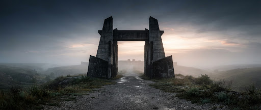

Проект 2023 / Культурное наследие
БОЛГАР
ЛОКАЦИЯТатарстан, РФ
Современный архитектурный порог, объединяющий историческую идентичность и промышленную точность.
Входная группа Болгар — это исследование материального структурализма. Используя сверхвысокопрочный бетон (UHPC) прочностью 99 МПа, мы воплотили традиционные исламские решетчатые узоры в прочную самонесущую конструктивную систему, которая определяет переход на священную территорию.
ПРОЕКТ
Комплекс входных групп
МАТЕРИАЛ А
Бетон 99 МПа
МАТЕРИАЛ Б
Металл, Дерево
ГОД
2023
КЛИЕНТ
Группа муниципального развития

РИСУНОК 01: СТРУКТУРНАЯ ДЕТАЛЬ РЕШЕТКИ
ХАРАКТЕРИСТИКИ
99 МПа
Прочность на сжатие протестирована в суровых климатических условиях для обеспечения жизненного цикла более 100 лет.


Структурная долговечность
99 МПА ИНЖЕНЕРНАЯ И ДИЗАЙН-СИСТЕМА